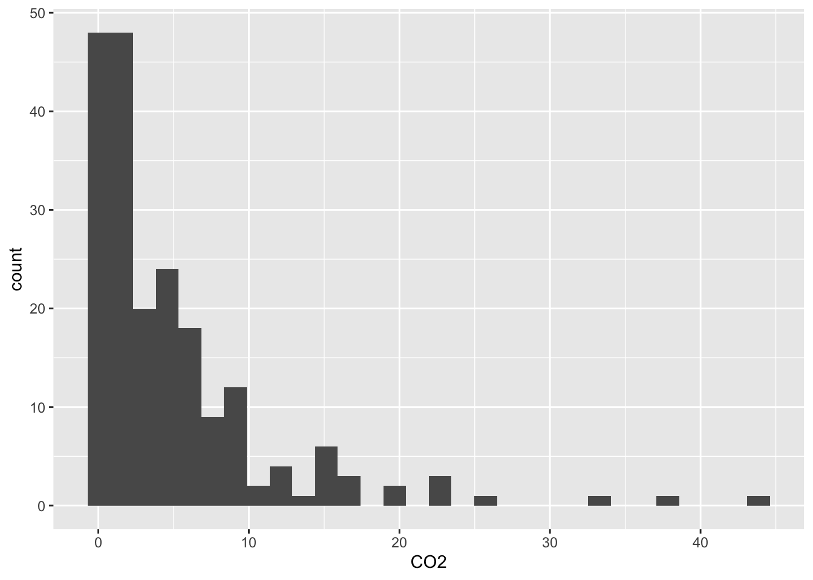
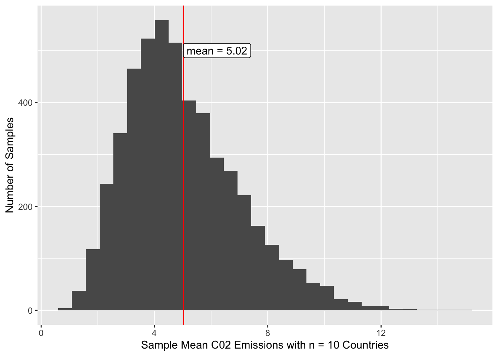

Activity 10.1: Intro to Sampling & Simple Random Samples
Warning
Submit via Gradescope, don’t forget to assign pages to the questions in the outline!
Delete any extraneous instructions (like this box) before submission. You will be deducted points from now on if you do not follow this instruction!
You do need to do a bit of R coding for this activity, I would recommend that you use the qmd template: 10.1-activity-simple-random-sampling.qmd. But you are welcome to use the Word template as always!
Terminology, Types of Sampling and Errors
For the following questions, describe the target population, sampling frame, sample, sampled population, sampling unit, and observation unit. Also note sampling method(s) was or were used and discuss what kinds of non-observation errors may be present based on the description. Make sure to discuss if you think those errors will likely lead to biased estimation and the nature of that bias.
In July 2019, the Iowa State Fair Straw Poll asked fair-goers to indicate their choices for candidates for U.S. president and Congress in the 2020 election. Fair-goers indicated their choices by stopping at the Iowa Secretary of State’s booth and filling out the poll on an electronic tablet. More than 2,000 people participated.
target population:
sampling frame:
sample:
sampled population:
sampling unit:
observation unit:
sampling method(s):
possible non-observation errors and bias if any (discuss):
Tip
You might want to look up information (or ask Dr. C about the Iowa State Fair) to really think about errors.
To study nutrient content of menus in retirement homes (for elderly folks who need care) in Washington State, Goren et al. (1993) mailed surveys to all 184 licenced homes in Washington State, directed to the administrator and food service manager. Of those, 43 were returned by the deadline and included menus.
target population:
sampling frame:
sample:
sampled population:
sampling unit:
observation unit:
sampling method(s):
possible non-observation errors and bias if any (discuss):
A study was completed in 2000 on how students in selected public schools described their use of the internet. Five school districts in a Western state were selected to give a cross-section of urban and rural schools that had internet access. A random sample of 500 students was drawn from the enrollment records for all middle and high students in each district. Each middle or high school student within a district had an equal probability of being selected. A survey, administered electronically, was available to the randomly selected students in the media center of their school. Participation in the survey was voluntary.
target population:
sampling frame:
sample:
sampled population:
sampling unit:
observation unit:
sampling method(s):
possible non-observation errors and bias if any (discuss):
The League of Women Voters of Texas (2019) evaluated the county election websites for all 254 counties in Texas. They found that 201 of the counties had insecure websites. That is the internet address began with “http” rather than “https.” Only nine used the “.gov” domain that indicates a bona-fide U.S.-based government organization.
target population:
sampling frame:
sample:
sampled population:
sampling unit:
observation unit:
sampling method(s):
possible non-observation errors and bias if any (discuss):
Simple Random Sampling (SRS)
While you often don’t get to have the full population as a sampling frame, we are going to walk through an example today to investigate the mathematical qualities of simple random sampling.
We are going to consider the population of countries included in the data from the World Bank put together in June 2019 by the authors of “Statistics: UnLocking the Power of Data.”
We are interested in estimating the average C02 emissions per-capita of a countries in the world.
# read in data on countries from the# package Lock5Datalibrary(Lock5Data)# when we use data from a package, we just use this data() functiondata(AllCountries3e)head(AllCountries3e) |> knitr::kable()
Country
Code
LandArea
Population
Density
GDP
Rural
CO2
PumpPrice
Military
Health
ArmedForces
Internet
Cell
HIV
Hunger
Diabetes
BirthRate
DeathRate
ElderlyPop
LifeExpectancy
FemaleLabor
Unemployment
Energy
Electricity
Developed
Afghanistan
AFG
652.86
37.172
56.9
521
74.5
0.29
0.70
3.72
2.01
323
11.4
67.4
NA
30.3
9.6
32.5
6.6
2.6
64.0
50.3
1.5
NA
NA
NA
Albania
ALB
27.40
2.866
104.6
5254
39.7
1.98
1.36
4.08
9.51
9
71.8
123.7
0.1
5.5
10.1
11.7
7.5
13.6
78.5
55.9
13.9
808
2309
1
Algeria
DZA
2381.74
42.228
17.7
4279
27.4
3.74
0.28
13.81
10.73
317
47.7
111.0
0.1
4.7
6.7
22.3
4.8
6.4
76.3
16.4
12.1
1328
1363
1
American Samoa
ASM
0.20
0.055
277.3
NA
12.8
NA
NA
NA
NA
NA
NA
NA
NA
NA
NA
NA
NA
NA
NA
NA
NA
NA
NA
NA
Andorra
AND
0.47
0.077
163.8
42030
11.9
5.83
NA
NA
14.02
NA
98.9
104.4
NA
NA
8.0
NA
NA
NA
NA
NA
NA
NA
NA
NA
Angola
AGO
1246.70
30.810
24.7
3432
34.5
1.29
0.97
9.40
5.43
117
14.3
44.7
1.9
23.9
3.9
41.3
8.4
2.5
61.8
76.4
7.3
545
312
1
TipData Documentation
You can look at the documentation for this data by typing or pasting ?AllCountries3e in the CONSOLE.
We unfortunately are missing the CO2 values (CO2) for 6% of the countries in the data. Let’s remove those countries from the data for now to keep things simple.
What is our population now?
What is the size of our population? \(N =\)
# only keep countries we have C02 information aboutcountries <- AllCountries3e |>filter(!is.na(CO2))
Use this countries data for the rest of the activity
We do literally have the population data here, so go ahead and calculate the population mean CO2 emissions per capita. Let’s also look at the distribution.
\[\mu =\] metric tons per capita
# histogram of C02 emissionscountries |>ggplot(aes(x = CO2)) +geom_histogram()

In a previous class, we asked students to think of 10 countries that they believed were representative of the countries in the world (i.e., they resemble the collection of all countries of the world). Why is this not the best way to get a sample to estimate the average CO2 emissions? Do you thing the estimate would be biased, and in what direction?
Let’s do simple random sampling instead. How many ways are there to select a sample \(\mathcal{S}\) of size \(n = 10\) from the population of 204 countries? Write out the formula you use and the output from R. (Hint: use the choose() function in R)
Calculate the probability of selecting a sample \(\mathcal{S}\) of size \(n = 10\) using SRS.
What is the probability of each country being included in a sample? In other words, calculate the inclusion probability (\(\pi_i\)).
Using R, take a sample of 10 countries from the countries data. Calculate the mean C02 emissions.
Do that again – make sure you use a different seed so you get a different number.
How different were your two sample estimates from the population mean?
Now let’s see what happens if we repeat this process many times (5,000 to be exact), taking a sample of 10 countries. I went ahead and did this for you. The plot below is a histogram of the sample mean C02 emissions. Note If you are reading this
What is the shape of the sampling distribution? Is this what you expected? Explain.
Where is the sampling distribution centered? Why does this make sense?
Why is the center of this sampling distribution not exactly \(\mu\)?

What do you think would happen to the sampling distribution if we increased the sample size to n = 20 or n = 50?
Remember how we removed countries that didn’t have C02 emission information? Let’s go back and look at them.
What do you notice about these places? How does not having data on these places impact our understanding of our estimates for C02 emissions and how we can generalize them?